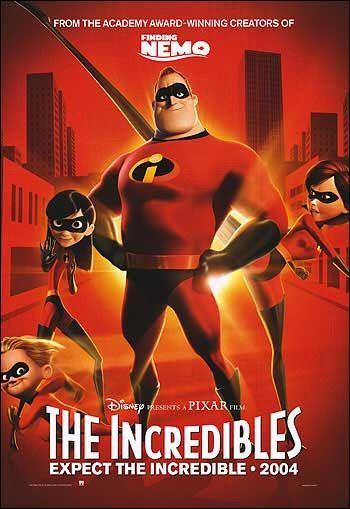

Los increibles es una de las peliculas más famosas de Disney Pixar, salió en 2004. Esta película muestra la historia de la familia Parr los cuales son superheroes conocidos como Elastic Girl y Mr. Increible, ellos combatían el crimen y ayudaban a proteger la ciudad; hubo en la época en la cual eran los más conocidos y amados por todos pero luego de que pusieron una ley en la cual los superheroes eran ilegales todo cambió, ellos y su familia tuvieron que esconder su identidad y tratar de dejar el pasado atrás.
